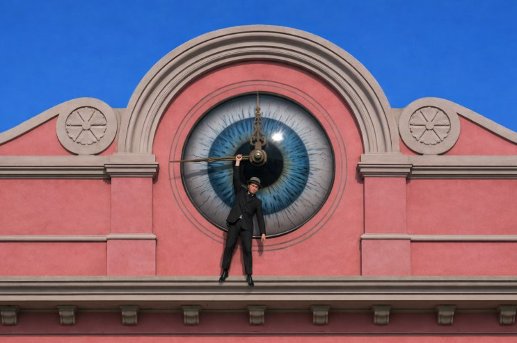

Dove il tempo si è fermato
Un gesto d’amicizia che ferma il tempo, un occhio che veglia, un luogo che cambia destino.
Storia
Due amici si abbracciano…
Allora corre verso l’edificio del tempo…
Quando la lancetta si ferma, si ferma anche il mondo…

Ingresso – La soglia del luogo…

Gita 1965 – Un gruppo in partenza…

Interno – Il corridoio vuoto…
Percorso e trasformazione
Il progetto racconta la trasformazione…
L’edificio che un tempo ospitava il dolore…

Facciata – Lo stesso edificio…

Donna seduta – Una figura che ascolta…

Studentessa – Il presente vivo…
Contesto accademico
Questo progetto nasce all’interno del corso…
L’occhio che sostituisce l’orologio…
Università degli Studi di Siena
Cattedra di Informatica applicata al Patrimonio Culturale
Anno accademico 2025–2026